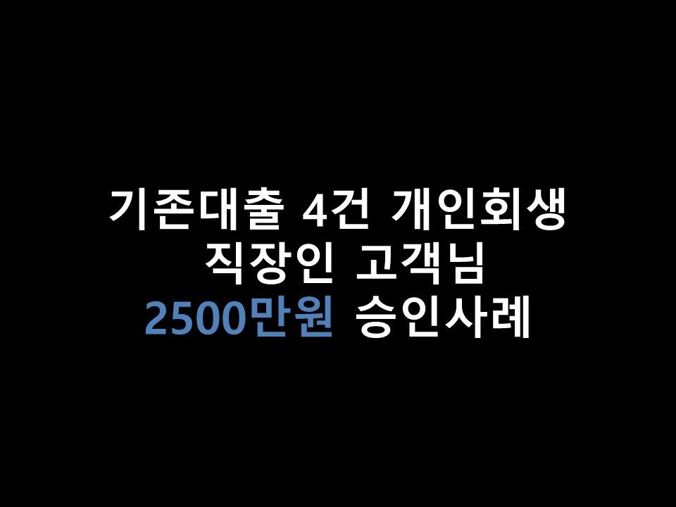
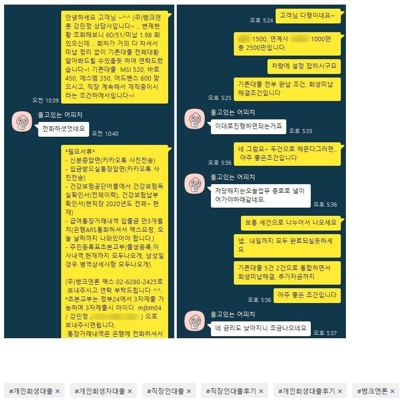

★기존대출 4건 개인회생 직장인 고객님 2500만원 승인사례★

안녕하세요 ~ 오늘은 개인회생중이신 직장인 고객님의 대출승인 사례를 소개해드리겠습니다 ^^.
고객님께서는 현재 4대보험 가입된 직장에서 5개월간 근무하고 계셨으며, 소득은 월 300만원 통장으로 수령받고 계셨습니다.
현재 개인회생 월 변제금 69만원, 60회중 51회차, 미납이 1.98회(약 130만원가량) 이셨으며,
이용중이신 대출로는 MSI 520만, 바로대부 450만, 어드벤스 600만, 기타별제권 350만원가량이 있으셨습니다~
어드벤스대부는 올해 8월 저희 뱅크앤론을 통해 승인이 되셨고, 나머지 3건은 모두 금리 24%로 이용중이셨습니다~
어드벤스 진행 이후 2개월이 지났고, 기존대출 통합 및 추가자금 진행 가능하실듯보여 고객님께 연락을 드리게 되었습니다.
고객님께서도 마침 추가적으로 생활자금이 필요하신 상황이라고 하시어, 대출진행을 도움드리게 되었습니다~
회생 미납 선정리가 가능하다면, 저축권도 심사 가능하신 조건이셨지만, 미납 선정리가 어렵다고 하셨기에
불가피하게 대부업으로 진행을 도움드렸습니다~ 그로 인해
G대부에서 1500만, G대부의 연계사 O사에서 1000만, 총 2500만원의 한도가 나오게 되었습니다~
(기존대출 4건 대환 및 회생미납 해결조건)
고객님께서는 매우 만족하며 진행을 원하셨고, 최종적으로 승인이 되셨습니다 ^^.
그로 인해 기존대출 통합및 저금리 대환, 회생미납 해결, 추가자금 진행에 성공하게 되셨습니다~
추후 3개월정도 이후에.. 이번에 대부로 받아가신 부분 저축권으로 대환 또한 알아봐드리겠다고 말씀드린 후,
상담을 마무리 지었습니다~^^. 아래는 저와 고객님의 카톡 대화내용의 일부입니다.
참고 부탁드립니다 ^^. 감사합니다~!
